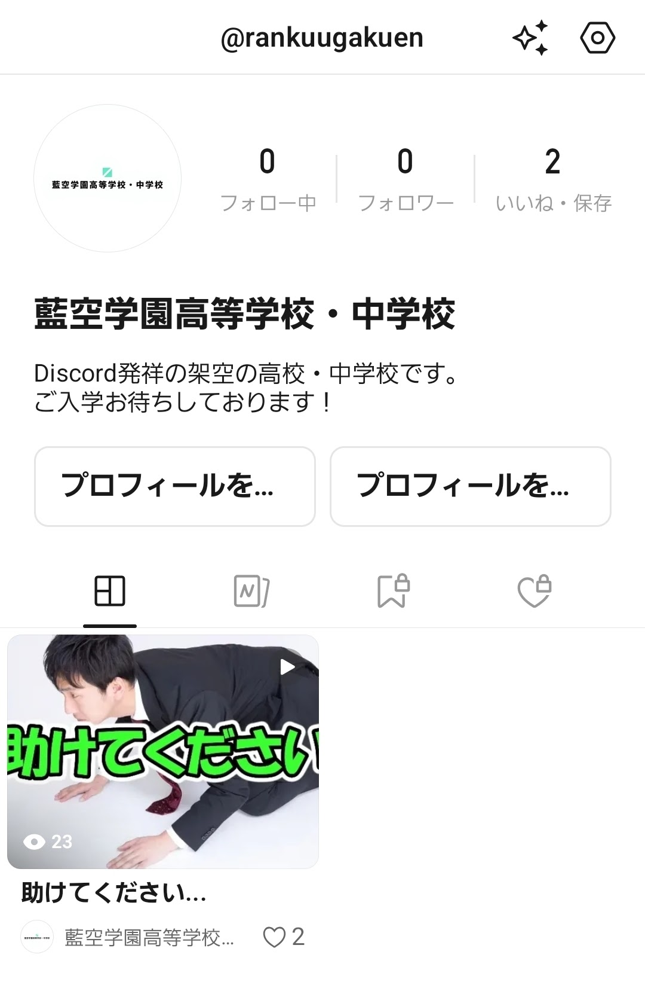
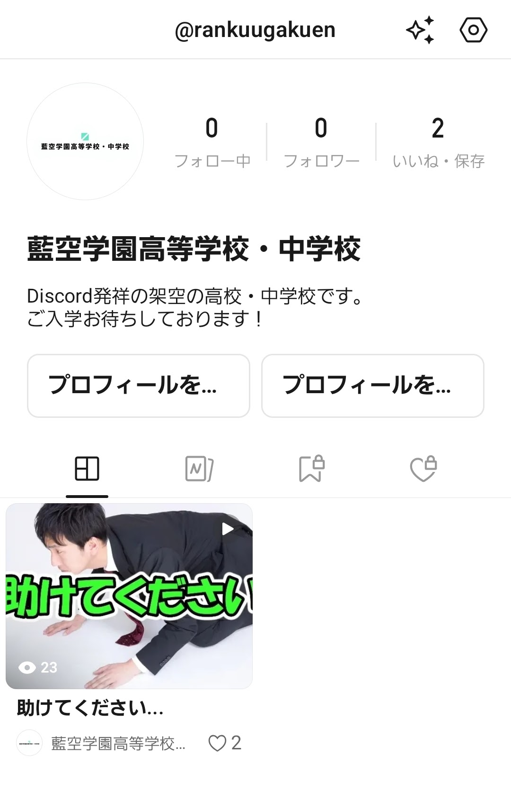
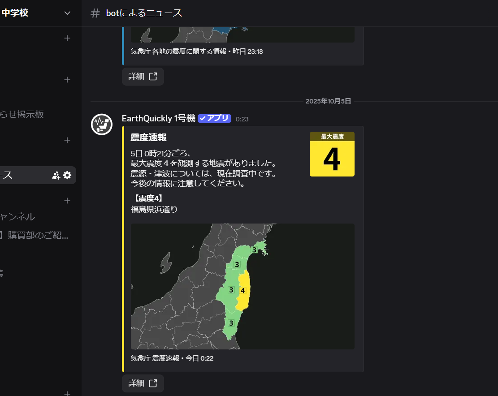

藍空学園高等学校・中学校
〜 勉強のプレッシャーから離れた、第二の居場所 〜
学園の目的
この学園は、学生が日々の疲れを癒すことを目的とした、授業のないオンライン型学園です。自由な交流と、穏やかな放課後のような時間を提供します。
 

チャンネル構成

自己紹介、教室、部活動など、多彩な場所が用意されています。
防災対策
防災通知システム「EarthQuickly」を導入し、安全をサポートしています。
〜 勉強のプレッシャーから離れた、第二の居場所 〜
この学園は、学生が日々の疲れを癒すことを目的とした、授業のないオンライン型学園です。自由な交流と、穏やかな放課後のような時間を提供します。
自己紹介、教室、部活動など、多彩な場所が用意されています。
防災通知システム「EarthQuickly」を導入し、安全をサポートしています。